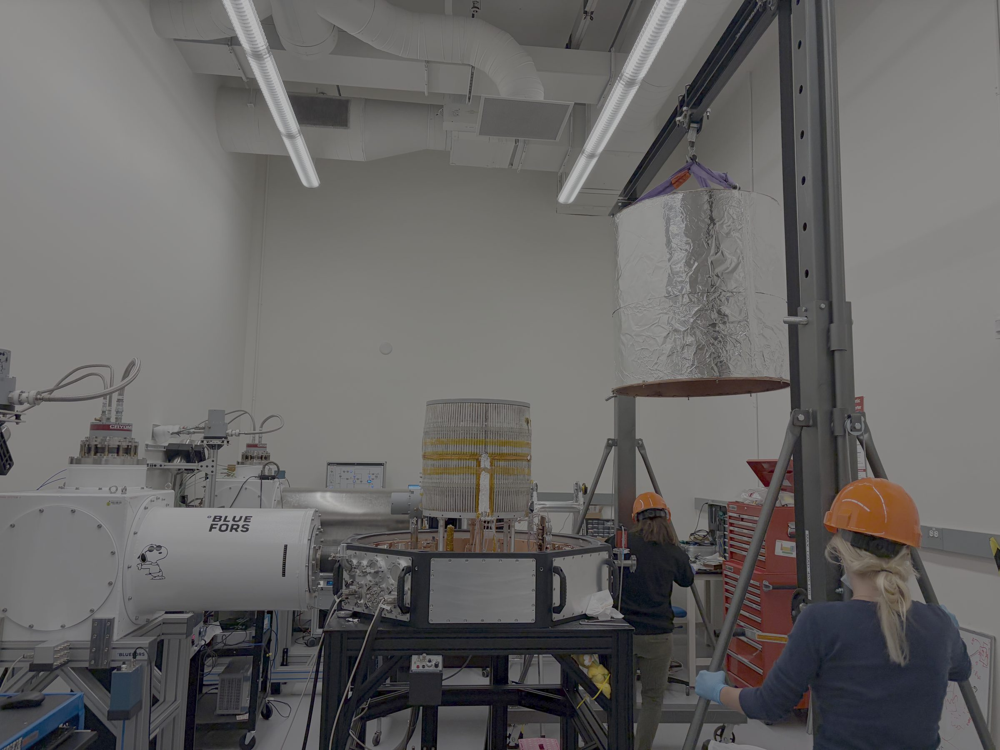

Dark Matter Radio
The nature of dark matter remains a central question in fundamental physics. The Irwin group searches for light bosonic dark matter, whose low mass allows it to behave as an oscillating field. A prominent candidate is the axion, proposed to resolve the strong CP problem in quantum chromodynamics.
The Dark Matter Radio (DMRadio) program uses tunable resonant circuits to detect the faint electromagnetic signals these fields could produce. In a strong magnetic field, axion dark matter would generate an oscillating electromagnetic response that can be described as an effective current. The oscillation frequency is set by the axion’s mass. Much like an AM radio tuning between stations, DMRadio experiments scan frequencies to search across a range of possible dark matter masses.
Together, the DMRadio family of experiments aims to explore a significant region of previously inaccessible parameter space for axions and hidden photons.

For more information about the experiments, collaboration, and latest developments, visit the DMRadio collaboration website.